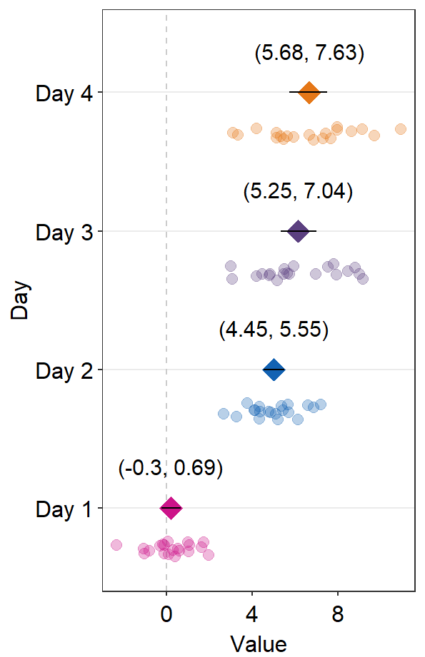

Chapter 7 Basic Statistics
As in the previous two chapters, we will continue to use data from this paper (PDF):
Seung Hyun Min, Alex S. Baldwin and Robert F. Hess. Ocular dominance plasticity: A binocular combination task finds no cumulative effect with repeated patching (2019). Vision Research, 161, 36-42.
Load the tidyverse and other libraries, and the csv file min2019b.csv using read_csv() from the tidyverse package.
library(tidyverse)
library(smplot)
library(cowplot)
df <- read_csv('https://www.smin95.com/min2019b.csv')
head(df)## # A tibble: 6 x 4
## Subject Day Time Cbratio
## <chr> <dbl> <dbl> <dbl>
## 1 a 1 0 -0.421
## 2 b 1 0 2.82
## 3 c 1 0 1.69
## 4 d 1 0 2.55
## 5 e 1 0 -0.217
## 6 f 1 0 0.6267.1 One-sample t-test
One sample t-test compares the mean of a sample to a hypothesized mean (often 0).
For example, here is Figure 3E from the paper. What do the *** mean? How about ** and *? Let’s take a look.

For instance, to determine if the area under curve (changes in contrast balance ratio over time) after patching is significant, so much so that one can confidently say that it is different from 0, we can perform a one-sample t-test using t.test().
Let’s use data from the sampe paper. We import the data from online using read_csv() and store them into a variable (in this case, df). Then, we compute the area under a curve using sm_auc_list() and store the values in the variable auc_df.
df <- read_csv('https://www.smin95.com/min2019b.csv')
df$Day <- as.factor(df$Day)
auc_df <- sm_auc_list(subjects = 'Subject', conditions = 'Day',
x = 'Time', values = 'Cbratio',
data = df)
head(auc_df)## Subject Day AUC_Cbratio
## 1 a 1 -2.36910
## 2 a 2 0.68265
## 3 a 3 -9.54795
## 4 a 4 27.12165
## 5 a 5 41.95680
## 6 b 1 60.52860The Day column of df has to be factored using as.factor() because Day here is a categorical, rather than, continuous variable.
To determine if the area under curve data on Day 1 were significantly different from 0, we could use one-sample t-test. First, let’s filter for data from only Day 1.
auc_df_day1 <- auc_df %>% filter(Day == 1)
auc_df_day1## Subject Day AUC_Cbratio
## 1 a 1 -2.36910
## 2 b 1 60.52860
## 3 c 1 94.84035
## 4 d 1 100.62510
## 5 e 1 55.32240
## 6 f 1 108.13770
## 7 g 1 63.27840
## 8 h 1 48.71625
## 9 u 1 39.11865
## 10 j 1 74.90610Then, lets extract the values from the AUC_Cbratio column and perform one-sample t-test using t.test().
t.test(auc_df_day1$AUC_Cbratio, mu = 0)##
## One Sample t-test
##
## data: auc_df_day1$AUC_Cbratio
## t = 6.1934, df = 9, p-value = 0.0001601
## alternative hypothesis: true mean is not equal to 0
## 95 percent confidence interval:
## 40.82072 87.80017
## sample estimates:
## mean of x
## 64.31045The p-value must be less than 0.05 to be considered statistically significant. It is labelled with one asterisk *. 0.001 < p < 0.01 corresponds to **, and p < 0.001 corresponds to ***. Since the p-value reported here is less than 0.001, Figure 3E has *** for Day 1’s area under a curve.
We can repeat this for Days 2-5. For brevity, we repeat the example with Days 2 and 4 only.
auc_df_day2 <- auc_df %>% filter(Day == 2)
t.test(auc_df_day2$AUC_Cbratio, mu = 0)##
## One Sample t-test
##
## data: auc_df_day2$AUC_Cbratio
## t = 3.5182, df = 9, p-value = 0.006534
## alternative hypothesis: true mean is not equal to 0
## 95 percent confidence interval:
## 19.60882 90.24161
## sample estimates:
## mean of x
## 54.925210.001 < p < 0.01 in this case, which is often denoted as **. Figure 3E shows the AUC of Day 2 with **.
auc_df_day4 <- auc_df %>% filter(Day == 4)
t.test(auc_df_day4$AUC_Cbratio, mu = 0)##
## One Sample t-test
##
## data: auc_df_day4$AUC_Cbratio
## t = 3.0973, df = 9, p-value = 0.01278
## alternative hypothesis: true mean is not equal to 0
## 95 percent confidence interval:
## 11.71639 75.19169
## sample estimates:
## mean of x
## 43.454040.01 < p < 0.05 in this case. Therefore one asterisk * is used to label the statistical significance.
7.2 2-sample t-test
A two-sample t-test is used to compare the mean of one sample to that of another sample.
For example, let’s compare changes in sensory eye dominance after short-term monocular deprivation in Day 1 vs Day 5. These values are shown in the Cbratio column.
Let’s filter only for AUC data from Days 1 and 5.
auc_df_day1 <- auc_df %>% filter(Day == 1)
auc_df_day5 <- auc_df %>% filter(Day == 5)
auc_df_day15 <- auc_df %>% filter(Day == 1 | Day == 5)Now, let’s plot a bar graph to display the AUC from Days 1 and 5 using sm_bar().
ggplot(data = auc_df_day15, mapping = aes(x = Day, y = AUC_Cbratio, fill = Day)) +
sm_bar(shape = 21, color = 'white', bar_fill_color = 'gray80') +
scale_fill_manual(values = sm_palette(2)) +
ggtitle('AUC in Days 1 and 5')
There seems to be a difference in the AUC AUC_Cbratio between Days 1 and 5. The error bars (in this case, standard error) are barely overlapping. If the error bars are clearly overlapping, there is often no significant difference (p < 0.05) between the two data sets. If there is no overlap, it is highly likely that a statistical test will show a significant difference (p < 0.05). Let’s take a look using t-test using the function t.test().
t.test() allows us to compare whether data between two different groups are significantly different. Here, $ is used to extract data from a specific column within a data frame. You could type df_0min$, press the Tab button from the keyboard, and see what happens. Since we will only compare values in the AUC_Cbratio column, let’s select for the AUC_Cbratio column and use these values in our t.test().
t.test(auc_df_day1$AUC_Cbratio, auc_df_day5$AUC_Cbratio, paired = TRUE)##
## Paired t-test
##
## data: auc_df_day1$AUC_Cbratio and auc_df_day5$AUC_Cbratio
## t = 1.5694, df = 9, p-value = 0.151
## alternative hypothesis: true difference in means is not equal to 0
## 95 percent confidence interval:
## -10.17563 56.27723
## sample estimates:
## mean of the differences
## 23.0508In this case, the subjects are paired because the 10 subjects performed on both Days 1 and 5. If your data are not paired (ex. patients vs controls) and you want to perform a t-test, you can set paired = FALSE.
If we are reporting the results, we should report it as such, t(9) = 1.60, p = 0.15. The difference between Days 1 and 5 is not statistically significant.
T-test can only be used when the data assume normality. In other word, the data that are to be analyzed using t.test() must have a normal distribution (shown below).

Whether the data have a normal distribution can be checked using a Shaprio-Wilk test (shapiro.test()). If p > 0.05, then the data have a normal distribution, and therefore, t-test can be used to analyze the data. If p < 0.05, the data are not normally distributed, and t-test cannot be used.
For example, let’s check whether the AUC data from Day 1 have a normal distribution.
shapiro.test(auc_df_day1$AUC_Cbratio)##
## Shapiro-Wilk normality test
##
## data: auc_df_day1$AUC_Cbratio
## W = 0.95039, p-value = 0.6732P value is 0.67, which is larger than 0.05. Therefore, the AUCs from Day 1 have a normal distribution.
shapiro.test(auc_df_day5$AUC_Cbratio)##
## Shapiro-Wilk normality test
##
## data: auc_df_day5$AUC_Cbratio
## W = 0.97531, p-value = 0.9353P value is 0.935, which is larger than 0.05. Therefore, the AUCs from Day 5 have a normal distribution. More information about shapiro.test() can be found in this link: http://www.sthda.com/english/wiki/normality-test-in-r.
T-test is a type of parametric statistical test, which is used to analyze data that are normally distributed. If the data are not normally distributed, non-parametric statistical test can be used.
7.3 Wilcoxon Signed Rank Test
Wilcoxon Signed Rank Test is a non-parametric statistical test that is used instead of a t-test when the data are not normally distributed.
If we assume that the Shaprio-Wilk test yields p < 0.05 for the following datasets, necessitating us to use a Wilcoxon Signed Rank Test for both one-sample and two-sample tests.
# one-sample Wilcoxon Signed Rank Test
wilcox.test(auc_df_day1$AUC_Cbratio, mu = 0)##
## Wilcoxon signed rank exact test
##
## data: auc_df_day1$AUC_Cbratio
## V = 54, p-value = 0.003906
## alternative hypothesis: true location is not equal to 0The p-value is 0.0039, which is less than 0.05. Therefore, according to the Wilcoxon test, the AUCs from Day 1 are significantly different from 0.
# two-sample Wilcoxon test
wilcox.test(auc_df_day1$AUC_Cbratio, auc_df_day5$AUC_Cbratio, paired = TRUE)##
## Wilcoxon signed rank exact test
##
## data: auc_df_day1$AUC_Cbratio and auc_df_day5$AUC_Cbratio
## V = 43, p-value = 0.1309
## alternative hypothesis: true location shift is not equal to 0The p-value is 0.13, which is larger than 0.05. Therefore, according to the Wilcoxon test, the AUCs from Days 1 and 2 are not significantly different.
7.4 Effect Size
However, even if p-value is larger than 0.05, this does not mean that there is no significant difference between the two groups/conditions. In fact, even a strong drug effect in a study that compares placebo vs. drug can result in p > 0.05 if the sample size is too small.
On the other hand, if a study is conducted a very large sample size (1000 patients per group) to examine the effect of a very weak drug, the data between weak drug and control can give us a p < 0.05, which indicates a statistically significant difference.
In short, p-value is not everything because it depends on the sample size.
If the sample size is small, p-value can be larger than 0.05. But as the sample gets larger, p-value will decrease even if the mean difference between the two groups remains the same.
In this example, the sample size is not large (n=10). Therefore, one might ask whether our conclusion that there is no significant difference between Days 1 and 5 is truly valid. One might also believe that if our sample size was larger (ex. n=50), we would have found a significant difference between Days 1 and 5.
To respond to this concern, we might need to calculate the effect size. If the effect size is large, there is a large difference between the sample groups. Unlike the p-value, the effect size does not depend on the sample size.
One measure to capture the effect size is Cohen’s d. We can use sm_effsize() to calculate Cohen’s d as a measure for the effect size.
- Small effect size: Cohen’s d around 0.2
- Medium effect size: Cohen’s d around 0.5
- Large effect size: Cohen’s d > 0.8.
The inputs for sm_effsize() are the data of two sample groups, just as they were in t.test().
Let’s compute the effect size (Cohen’s d) using AUC data from Days 1 and 2.
sm_effsize(auc_df_day1$AUC_Cbratio, auc_df_day2$AUC_Cbratio)## [1] 0.2238542Cohen’s d equals 0.224, which is a very small effect size. This indicates that there is a very small difference in AUC between Days 1 and 2.
t.test(auc_df_day1$AUC_Cbratio, auc_df_day2$AUC_Cbratio,
paired = TRUE)##
## Paired t-test
##
## data: auc_df_day1$AUC_Cbratio and auc_df_day2$AUC_Cbratio
## t = 0.46312, df = 9, p-value = 0.6543
## alternative hypothesis: true difference in means is not equal to 0
## 95 percent confidence interval:
## -36.45777 55.22823
## sample estimates:
## mean of the differences
## 9.38523Also, it is recommended that both p-value and effect size are reported at all times. In this example, I would report the results as: t(9) = 0.46, p = 0.65, Cohen’s d = 0.22.
Let’s see what happens in the effect size and p-value from t-test if there are 1000 subjects.
auc_df_day1b <- do.call('rbind', replicate(100, auc_df_day1, simplify = FALSE))
auc_df_day1b$Subject <- paste0('S',1:1000)
head(auc_df_day1b, 30)## Subject Day AUC_Cbratio
## 1 S1 1 -2.36910
## 2 S2 1 60.52860
## 3 S3 1 94.84035
## 4 S4 1 100.62510
## 5 S5 1 55.32240
## 6 S6 1 108.13770
## 7 S7 1 63.27840
## 8 S8 1 48.71625
## 9 S9 1 39.11865
## 10 S10 1 74.90610
## 11 S11 1 -2.36910
## 12 S12 1 60.52860
## 13 S13 1 94.84035
## 14 S14 1 100.62510
## 15 S15 1 55.32240
## 16 S16 1 108.13770
## 17 S17 1 63.27840
## 18 S18 1 48.71625
## 19 S19 1 39.11865
## 20 S20 1 74.90610
## 21 S21 1 -2.36910
## 22 S22 1 60.52860
## 23 S23 1 94.84035
## 24 S24 1 100.62510
## 25 S25 1 55.32240
## 26 S26 1 108.13770
## 27 S27 1 63.27840
## 28 S28 1 48.71625
## 29 S29 1 39.11865
## 30 S30 1 74.90610We have replicated all the rows of the data frame auc_df_day1 by 100 times to create 1000 rows total (i.e., 1000 subjects).
auc_df_day2b <- do.call('rbind', replicate(100, auc_df_day2, simplify = FALSE))
auc_df_day2b$Subject <- paste0('S',1:1000)
head(auc_df_day2b, 30)## Subject Day AUC_Cbratio
## 1 S1 2 0.68265
## 2 S2 2 80.38215
## 3 S3 2 1.78695
## 4 S4 2 -19.60125
## 5 S5 2 132.99825
## 6 S6 2 31.14285
## 7 S7 2 80.24685
## 8 S8 2 75.98130
## 9 S9 2 64.56690
## 10 S10 2 101.06550
## 11 S11 2 0.68265
## 12 S12 2 80.38215
## 13 S13 2 1.78695
## 14 S14 2 -19.60125
## 15 S15 2 132.99825
## 16 S16 2 31.14285
## 17 S17 2 80.24685
## 18 S18 2 75.98130
## 19 S19 2 64.56690
## 20 S20 2 101.06550
## 21 S21 2 0.68265
## 22 S22 2 80.38215
## 23 S23 2 1.78695
## 24 S24 2 -19.60125
## 25 S25 2 132.99825
## 26 S26 2 31.14285
## 27 S27 2 80.24685
## 28 S28 2 75.98130
## 29 S29 2 64.56690
## 30 S30 2 101.06550We have replicated all the rows of the data frame auc_df_day2 by 100 times to create 1000 rows total (i.e., 1000 subjects).
sm_effsize(auc_df_day1b$AUC_Cbratio, auc_df_day2b$AUC_Cbratio)## [1] 0.2358451The effect size is 0.24. It has barely changed. Theoretically, it should not change (i.e., stay at 0.224), but for some reason here, it has changed very slightly.
t.test(auc_df_day1b$AUC_Cbratio, auc_df_day2b$AUC_Cbratio,
paired = T)##
## Paired t-test
##
## data: auc_df_day1b$AUC_Cbratio and auc_df_day2b$AUC_Cbratio
## t = 4.8793, df = 999, p-value = 1.239e-06
## alternative hypothesis: true difference in means is not equal to 0
## 95 percent confidence interval:
## 5.610696 13.159764
## sample estimates:
## mean of the differences
## 9.38523Now, the p-value is much less than 0.001, rather than staying at 0.65. Therefore, we can now observe that p-value is heavily affected by the sample size, whereas the effect size (Cohen’s d) does not. In short, as the sample size increases, the p-value decreases even if the effect size stays the same.
7.5 Power Analysis
We got p > 0.05 with our small sample size (n = 10). As we previously mentioned, we know that p-value gets smaller with an increasing sample size. Therefore, given the mean difference between two sample groups (i.e., same effect size), the p-value can change depending on the sample size. So, it is important to report both the p-value and the effect size.
So, one might be concerned with what would be the minimal sample size to detect a statistically significant difference between the two groups (Days 1 and 5). This can be achieved using power analysis. Note that p can always be less than 0.05 as long as the sample size meets the requirement (i.e., very large).
If the effect size was large but the data yielded p > 0.05, then we could predict that the minimal sample size from power analysis would be not large. If the effect size was small and the data yielded p > 0.05, as it was for my data, the minimal sample size to yield p < 0.05 would need to be very large.
If the minimal sample size from power analysis was not large (hence, large effect size), then one could conclude that I did not collect enough data and incorrectly concluded that there was no significant difference between the two groups. This would be so because if the sample size was larger, I would have gotten p < 0.05.
Power analysis can be performed using sm_power(). The inputs for sm_power() are data of two sample groups, just as they were in t.test().
sm_power(auc_df_day1b$AUC_Cbratio, auc_df_day2b$AUC_Cbratio,
paired = TRUE)##
## Paired t test power calculation
##
## n = 143.0411
## d = 0.2358451
## sig.level = 0.05
## power = 0.8
## alternative = two.sided
##
## NOTE: n is number of *pairs*According to our power analysis (significant level = 0.05, power = 80%), we would need about 143 subjects per group (n = 143.0411) for the p-value to reach below 0.05 and, therefore, for us to detect a statistically significant difference in AUCs between Days 1 and 2. In other words, the difference between Days 1 and 2 is very small. Also, the conclusion that there was no difference between the days seems to be valid even though the sample size is small.
To learn more about performing statistical tests in R, please check out the book entitled YaRrr! The Pirate’s Guide to R by Nathaniel Phillips (https://bookdown.org/ndphillips/YaRrr/).